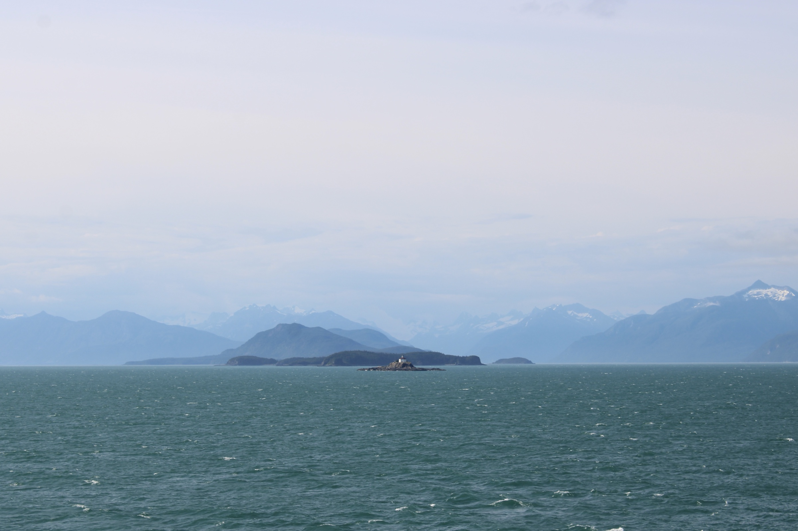

August 2026 · Reflections
Eldred Beacon
As if destiny and fate collided — and here you are. An infinitesimal grain. Forging each day against the turning horizon; epic lives in proportion to nothing.
We can think, read, watch — but to live our duty is by action alone. Exercising fortitude and harboring faith. Under fear's weight, against the dark tides.
To begin from within while the world chases without. The eternal beacon of joy emanating from our own, boundless realization.
